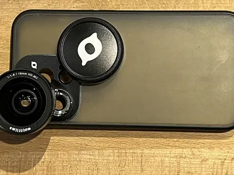

Gartenkreuzspinne
Araneus diadematus
Nützlinge1–1,8 cmtagaktivnachtaktiv
Obst & GehölzBlütenHaus & Mauer
Die Spinne mit dem weißen Kreuz auf dem Rücken und den großen Radnetzen zwischen Sträuchern. Im Spätsommer hängen die großen Radnetze überall im Garten und glitzern im Morgentau.
NützlingFängt Fliegen, Mücken und geflügelte Blattläuse
So erkennst du die Gartenkreuzspinne
- Weißes Kreuz aus hellen Flecken auf dem Hinterleib
- Kugeliger Hinterleib, gelblich bis dunkelbraun
- Großes, rundes Radnetz
Auch zu finden unter: Dunkles Krabbeltier
- Aktiv
- tagaktiv und nachtaktiv
Wann ist die Gartenkreuzspinne zu sehen?
kaum zu sehenaktivbeste Zeit
Aktiv: Juni, Juli, August, September und Oktober. Hauptzeit: August und September.
Gartenkreuzspinne ist von Juni bis Oktober zu sehen. Besonders viel los ist im August und September. Im Spätsommer hängen die großen Radnetze überall im Garten und glitzern im Morgentau.
Lebensweise
Was frisst die Kreuzspinne?
Alles, was sich im Netz verfängt: Fliegen, Mücken, geflügelte Blattläuse und manchmal Wespen.
Das Netz
Sie baut ihr Netz oft täglich neu und frisst die alten Fäden auf, um die Seide wiederzuverwerten.
Gut zu wissen
Für Menschen ist sie harmlos. Ihr Biss ist selten und kaum zu spüren.
So hilfst du ihr
Stauden und Gräser über den Winter stehen lassen. Dort überwintern die Eikokons.
Beobachtungstipp
An nebligen Septembermorgen sind die Netze mit Tau benetzt und besonders gut zu sehen.
Passend dazu
- Beispielfoto · Foto: Michel Helmecke, CC BY-SA 2.0 de – Lizenzangaben im Bildnachweis
 Unser Tipp
Unser TippBecherlupe mit Vergrößerung
Auswahl bei Amazon
Insekten kurz einfangen, genau ansehen und wieder freilassen. Ideal auch für Kinder.
Bei Amazon ansehen Becherlupe mit Vergrößerung (Werbelink, öffnet in neuem Fenster) - Beispielfoto · Foto: Burkhard Mücke, CC BY 4.0 – Lizenzangaben im Bildnachweis

Makro-Aufsatz fürs Handy
Auswahl bei Amazon
Ein Clip-Objektiv macht aus dem Smartphone eine Makrokamera. So kannst du Käfer und Raupen später in Ruhe bestimmen.
Bei Amazon ansehen Makro-Aufsatz fürs Handy (Werbelink, öffnet in neuem Fenster)
Werbelink: Wenn du über diesen Link etwas kaufst, erhält der Gartentierkompass eine kleine Provision von Amazon. Für dich ändert sich am Preis nichts. Als Amazon-Partner verdiene ich an qualifizierten Verkäufen.
Mehr erfahren
Oft in der Nähe
-
 Foto: Ermell, CC BY-SA 4.0 – Lizenzangaben im Bildnachweis tagaktiv
Foto: Ermell, CC BY-SA 4.0 – Lizenzangaben im Bildnachweis tagaktivAsiatischer Marienkäfer
NützlingeEingeschleppter Marienkäfer mit wechselndem Kleid: gelb, orange oder schwarz, mit null bis neunzehn Punkten.
-
 Foto: Didier Descouens, CC BY-SA 4.0 – Lizenzangaben im Bildnachweis nachtaktiv
Foto: Didier Descouens, CC BY-SA 4.0 – Lizenzangaben im Bildnachweis nachtaktivFlorfliege
NützlingeZartes, hellgrünes Insekt mit goldenen Augen und durchsichtigen Flügeln, das nachts ans Licht fliegt.
-
 Foto: Didier Descouens, CC BY-SA 4.0 – Lizenzangaben im Bildnachweis nachtaktiv
Foto: Didier Descouens, CC BY-SA 4.0 – Lizenzangaben im Bildnachweis nachtaktivGemeiner Ohrwurm
NützlingeBrauner Nachtjäger mit Zange am Hinterleib. Er kriecht weder in Ohren noch kneift er ernsthaft.
-
 Foto: Reytan, CC BY-SA 3.0 – Lizenzangaben im Bildnachweis tagaktiv
Foto: Reytan, CC BY-SA 3.0 – Lizenzangaben im Bildnachweis tagaktivSiebenpunkt-Marienkäfer
NützlingeDer bekannteste Glücksbringer im Garten: rot mit sieben schwarzen Punkten und ein eifriger Blattlausjäger.